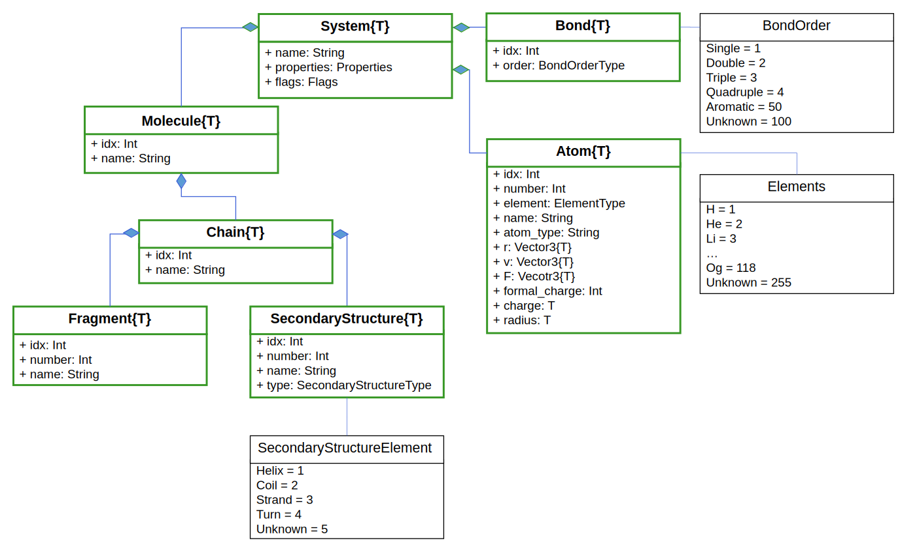

Getting started
BiochemicalAlgorithms.jl`s design is inspired by its predecessor BALL. BALL and BiochemicalAlgorithms.jl both have a set of KERNEL classes or core classes to represent molecular entities such as Molecules, Proteins, Atoms, Bonds etc. The following class diagramm shows the different classes and their relationship to each others.

UML class diagram Note: Only the most important functionalities are shown here.
In the center of all classes resides the System. So let’s see it in action with a simple peptide:
using BiochemicalAlgorithmss = load_pdb(ball_data_path("../test/data/AlaAla.pdb"))System{Float32}: AA
23 atoms
0 bonds
1 molecules
1 chains
1 secondary structures
2 fragmentsThis will give us an overview of the objects associated with our system. It contains 23 atoms, 0 bonds, 1 molecule, 1 chain, 0 secondary structures and 2 fragments. We look at each group separately in the following sections.
If we do not explicitely create a system, the data will be stored in the default system:
load_pdb(ball_data_path("../test/data/AlaAla.pdb"))System{Float32}: AA
23 atoms
0 bonds
1 molecules
1 chains
1 secondary structures
2 fragmentsAtom
We can access the atoms like this:
sys_atms = atoms(s)natoms(sys_atms)23Let’s play around with it:
println("Atom elements:")for a in sys_atms print(a.element)endprintln()n1 = atom_by_name(s, "N")println(n1.idx)Atom elements:
NCCOHHHHHHCHNCCHHHHCHOO
4We can access an atom by its name, which will return the first atom matching the given name. If there are more atoms with the same name and we are not interested in the first one, we can access the atom by the atom index. The atom index is unique inside a system but not necessarily starting by one.
println("Atom ids:")for a in sys_atms println(a.idx, " ", a.element)endn2 = atom_by_idx(s, 17)Atom ids:
4 N
5 C
6 C
7 O
8 H
9 H
10 H
11 H
12 H
13 H
14 C
15 H
17 N
18 C
19 C
20 H
21 H
22 H
23 H
24 C
25 H
26 O
27 O
BiochemicalAlgorithms.Atom{Float32}: (idx = 17, number = 13, element = BiochemicalAlgorithms.Elements.N, name = "N", atom_type = "", r = Float32[0.133, 0.98, 2.268], v = Float32[0.0, 0.0, 0.0], F = Float32[0.0, 0.0, 0.0], formal_charge = 0, charge = 0.0f0, radius = 0.0f0)Atom features the atom number as well. The atom number does NOT have to be unique inside the system!
for a in sys_atms println(a.idx, " ", a.number)end4 1
5 2
6 3
7 4
8 5
9 6
10 7
11 8
12 9
13 10
14 11
15 12
17 13
18 14
19 15
20 16
21 17
22 18
23 19
24 20
25 21
26 22
27 23Next, we will have a look at Bond.
Bond
BiochemicalAlgorithms.jl supports different BondTypes:
BiochemicalAlgorithms.BondOrderTypeEnum type BondOrder.T <: Enum{Int32} with 6 instances:
BondOrder.Single = 1
BondOrder.Double = 2
BondOrder.Triple = 3
BondOrder.Quadruple = 4
BondOrder.Aromatic = 50
BondOrder.Unknown = 100Typically, bonds are not included in the PDB-FileFormat and have to be computed. This can be achieved with the FragmentDataBase, which contains known fragments (all amino acids such as alanine, all nucleotides, same ions …). If you are interested in the fragments contained in the default FragmentDB, take a look at data/fragments of the repository. There you find all the fragments, each one stored in a separate json format. So let’s take a look at the FragmentDB and bonds:
s = load_pdb(ball_data_path("../test/data/AlaAla.pdb"))nbonds(s)0So far, the system has no bonds. We can also visualize the structure using BiochemicalVisualization.jl.
If BiochemicalVisualization is not yet installed, you can add it via:
using PkgPkg.add("BiochemicalVisualization")using BiochemicalVisualizationball_and_stick(s)Now, let’s create some bonds:
infer_topology!(s)# ball_and_stick(s) uncomment for visualization[ Info: reconstruct_fragments!(): added 0 atoms.
[ Info: build_bonds!(): built 22 bondsAnd finally, we do have our bonds. This example demonstrate the importance of visualizing for the understanding of structural data. Note: The exclamation mark behind the function name indicates that the system will be changed through the functions. The system now contains bonds and the residues carries flags:
println(s)for i in residues(s) println(i.flags)endBiochemicalAlgorithms.System{Float32} with 23 atoms and 22 bonds (AA)
Set([:N_TERMINAL])
Set([:C_TERMINAL])Let’s take a deeper look at the bonds. Bond are only formed inside the same system and not across systems.
bonds(s)| # | idx | order |
|---|---|---|
| 1 | 29 | Single |
| 2 | 30 | Single |
| 3 | 31 | Single |
| 4 | 32 | Single |
| 5 | 33 | Single |
| 6 | 34 | Single |
| 7 | 35 | Single |
| 8 | 36 | Double |
| 9 | 37 | Single |
| 10 | 38 | Single |
| 11 | 39 | Single |
| 12 | 40 | Single |
| 13 | 41 | Single |
| 14 | 42 | Single |
| 15 | 43 | Single |
| 16 | 44 | Single |
| 17 | 45 | Double |
| 18 | 46 | Single |
| 19 | 47 | Single |
| 20 | 48 | Single |
| 21 | 49 | Single |
| 22 | 50 | Single |
Bonds can be accessed via their respective index, deleted, and be put in the system
bond = bond_by_idx(s, 30)a1, a2 = get_partners(bond)println("Bond index: ", bond.idx, ", between atoms ", a1.idx, " and ", a2.idx, ", with order: ", bond.order)println("Bonds in the system: ", nbonds(s))delete!(bond)println("Bonds in the system after deletion: ", nbonds(s))bond = Bond(a1, a2, BondOrder.Single)println("Bonds in the system after re-adding the bond: ", nbonds(s))Bond index: 30, between atoms 4 and 5, with order: Single
Bonds in the system: 22
Bonds in the system after deletion: 21
Bonds in the system after re-adding the bond: 22Be careful: The bond index is now different because it is a new Bond object:
bond.idx51We have used get_partners above to retrieve both atoms associated with a bond. Similarly, get_partner can be used to retrieve the second atom if one atom of a bond is already known:
atom = atom_by_idx(s, 12)bond = bonds(atom)[1]partner_atom = get_partner(bond, atom)println(partner_atom.idx)println("The bond length is ", bond_length(bond))4
The bond length is 1.0135294Fragment
Fragments represent molecule fragments. In context of proteins or nucleic acids, the fragment can be used to represent residues or nucleotides. See the documentation for the definition of the FragmentVariantType
nfragments(s)for frag in fragments(s) println(frag.name, " ", frag.idx)endn2 = atom_by_idx(s, 5)println("The N atom belongs to residue: ", n2.fragment_idx)ALA 3
ALA 16
The N atom belongs to residue: 3We can get the fragment as well directly:
fragment = parent_fragment(n2)println(fragment)res2 = fragment_by_idx(s, 3)BiochemicalAlgorithms.Fragment{Float32}: (idx = 3, number = 1, name = "ALA")
BiochemicalAlgorithms.Fragment{Float32}: (idx = 3, number = 1, name = "ALA")Just like atom indices, fragment indices not necessarily follow a certain order but are unique inside the same system object.
res1 = fragments(s)[1]res1.variant # 1 = unknown, 2 = residue, 3 = nucleotideFragmentVariant.Residue = 2Alternatively, it is also possible to check if this is a nucleotide:
println(isnucleotide(res1))println("Number of fragments before push: ", nfragments(s))push!(chain_by_idx(s, 2), res1)println("Number of fragments after push: ", nfragments(s))delete!(res1)println("Number of fragments after deletion: ", nfragments(s))for frag in fragments(s) println(frag.name, " ", frag.idx)endsfalse
Number of fragments before push: 2
Number of fragments after push: 3
Number of fragments after deletion: 2
ALA 16
ALA 52
System{Float32}: AA
11 atoms
10 bonds
1 molecules
1 chains
1 secondary structures
2 fragmentsOr a residue:
s = load_pdb(ball_data_path("../test/data/AlaAla.pdb")) # restore original datares1 = fragments(s)[1]println("is residue ", isresidue(res1))is residue trueThere are more functionalities related to fragments. Have a look at the documentation for Fragment for more details.
Residue
As described in the Fragments section, Residue is a Fragment with FragmentVariant.Residue and typically describes an amino acid:
s = load_pdb(ball_data_path("../test/data/AlaAla.pdb")) # restore original datares = fragments(s)[1]println("isresidue(): ", isresidue(res))println("is_c_terminal(): ", is_c_terminal(res))println("is_n_terminal(): ", is_n_terminal(res))isresidue(): true
is_c_terminal(): false
is_n_terminal(): falseSome functionality is only available after preprocessing through the FragmentDB:
infer_topology!(s)println("is_c_terminal(): ", is_c_terminal(res))println("is_n_terminal(): ", is_n_terminal(res))res2 = fragments(s)[2]println("is_c_terminal(): ", is_c_terminal(res2))[ Info: reconstruct_fragments!(): added 0 atoms.
[ Info: build_bonds!(): built 22 bonds
is_c_terminal(): false
is_n_terminal(): true
is_c_terminal(): trueNucleotide
Nucleotide is a Fragment with FragmentVariant.Nucleotide:
s = System()chain = Chain(Molecule(s))n1 = Nucleotide(chain, 1; name="my nucleotide", properties=Properties(:first => 'a', :second => "b"), flags=Flags([:third]))n2 = Nucleotide(chain, 2)BiochemicalAlgorithms.Fragment{Float32}: (idx = 4, number = 2, name = "")Molecule
Molecules are used to distinguish between proteins and non-proteins
s = load_pdb(ball_data_path("../test/data/2ptc.pdb"))m = molecules(s)| # | idx | name |
|---|---|---|
| 1 | 1 | COMPLEX (PROTEINASE/INHIBITOR) |
Like in the other cases before, we get a table of molecules. Which we can access similarly to atoms and bonds:
println(typeof(m))molecule_by_idx(s, 1)println("The number of molecules in the system: ", nmolecules(s))println("The number of proteins in the system: ", nproteins(s))MoleculeTable{Float32}
The number of molecules in the system: 1
The number of proteins in the system: 0Molecules have a variant which is MoleculareVariant.None by default. Users can decide, if a molecule is to be considered as a protein. isprotein checks if the MoleculeVariant.Protein is set:
println("is a protein: ", isprotein(m[1]))infer_topology!(s)println("is a protein: ", isprotein(m[1]))m[1].variant = MoleculeVariant.Proteinprintln("is a protein: ", isprotein(m[1]))is a protein: false
[ Info: reconstruct_fragments!(): added 2346 atoms.
[ Info: build_bonds!(): built 4471 bonds
is a protein: false
is a protein: trueSimilar to molecules we can access proteins:
println("Number of proteins in the system: ", proteins(s))pti = protein_by_idx(s, 1)Number of proteins in the system: BiochemicalAlgorithms.MoleculeTable{Float32} with 1 rows
BiochemicalAlgorithms.Molecule{Float32}: (idx = 1, name = "COMPLEX (PROTEINASE/INHIBITOR)")A very useful functionality is the access the parent molecule or protein a specific atom is belonging to in cases where we have several molecules to deal with.
atom = atom_by_idx(s, 5)println("This atom belongs to protein: ", parent_protein(atom))This atom belongs to protein: BiochemicalAlgorithms.Molecule{Float32}: (idx = 1, name = "COMPLEX (PROTEINASE/INHIBITOR)")Chains
Chains can be considered as an aggregation of fragments (either residues or nucleotides).
s = load_pdb(ball_data_path("../test/data/4hhb.pdb"))println("Number of chains in the system: ", nchains(s))for chain in chains(s) println("Chain index: ", chain.idx)endchain = chain_by_idx(s, 2)println("Chain 2 contains ", nfragments(chain), " fragments.")println("The parent molecule of chain 2 is: ", parent_molecule(chain))Number of chains in the system: 12
Chain index: 2
Chain index: 1213
Chain index: 2483
Chain index: 3694
Chain index: 4964
Chain index: 5009
Chain index: 5056
Chain index: 5101
Chain index: 5148
Chain index: 5261
Chain index: 5376
Chain index: 5495
Chain 2 contains 141 fragments.
The parent molecule of chain 2 is: BiochemicalAlgorithms.Molecule{Float32}: (idx = 1, name = "OXYGEN TRANSPORT")SecondaryStructures
Now, that we learned about chains, we can take a look at the secondary structures. Let’s create a molecule:
s = System()chain = Chain(Molecule(s))ss1 = SecondaryStructure( Residue(chain, 1), Residue(chain, 2), 1, SecondaryStructureElement.Helix; name="H1")ss2 = SecondaryStructure( Residue(chain, 3), Residue(chain, 4), 2, SecondaryStructureElement.Coil; name="C1")ss3 = SecondaryStructure( Residue(chain, 5), Residue(chain, 6), 3, SecondaryStructureElement.Strand; name="S1")ss4 = SecondaryStructure( Residue(chain, 7), Residue(chain, 8), 4, SecondaryStructureElement.Turn; name="T1")println("Number of secondary structures: ", nsecondary_structures(s))# get all helices of the chainfilter(sst -> sst.type == SecondaryStructureElement.Helix, secondary_structures(chain))Number of secondary structures: 4| # | idx | number | type | name |
|---|---|---|---|---|
| 1 | 5 | 1 | Helix | H1 |
In addition, we can compute the secondary structures for an input file:
s = load_pdb(ball_data_path("../test/data/bpti.pdb"))println(s)infer_topology!(s)predict_hbonds!(s, :KABSCH_SANDER)predict_secondary_structure!(s)BiochemicalAlgorithms.System{Float32} with 454 atoms and 3 bonds (PTI (from 2PTC.BRK))
[ Info: reconstruct_fragments!(): added 438 atoms.
[ Info: build_bonds!(): built 903 bonds
[ Info: Added 31 hydrogen bonds.
"---GGG-----------EEEEEEETTTTEEEEEEE---------B--HHHHHHHHTT-"